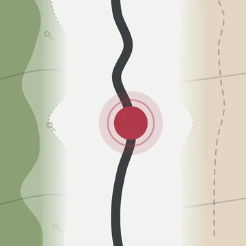

Thru-hiking navigation — offline maps for the whole trail
Made by thru-hikers for thru-hikers. This app is hand-tailored to what we need on trail.
Participate in beta testing NOWLaunching October 25, 2026 ·
Free · iPhone · iOS 18+ · no account, no subscriptionOffline and free Section guide Everything important in one view Easy water reports
Everything a thru-hiking navigation app has to do on a long trail, and the things we kept wishing ours would.
Launching October 25, 2026 ·
Free · iPhone · iOS 18+